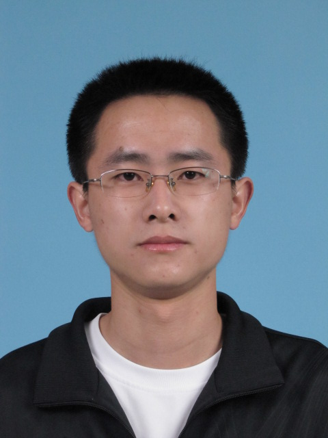
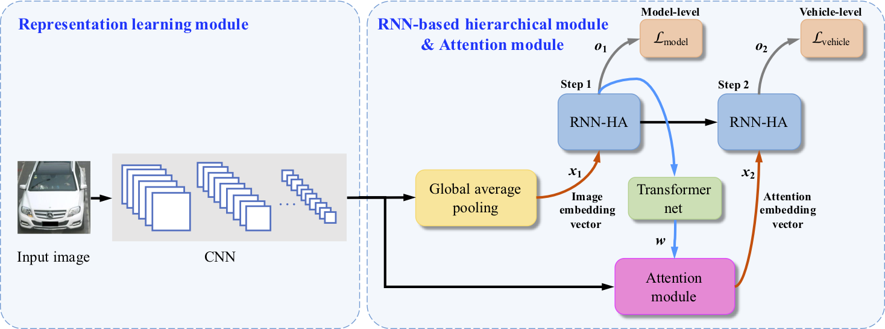
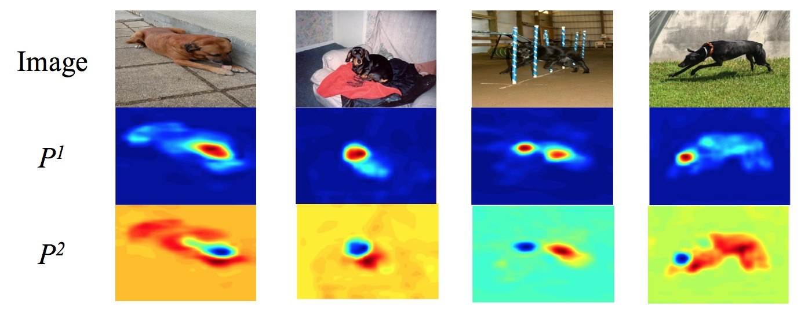
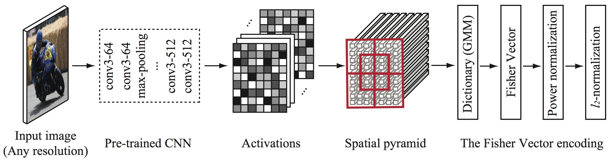

Run Wang （汪润）
|  | Run Wang Office: Room C309, School of Computer Science, Wuhan University, Wuhan |


About Me
I am currently leading Megvii Research Nanjing, Face++ (Megvii Technology Ltd.). We focus on developing novel computer vision systems, creating new deep learning models, publishing high-quality papers and deploying cutting-edge technologies to better serve Intelligent Retail in Megvii.
Updates
Sep. 21, 2018: One paper accepted for ACCV 2018.
Aug. 28, 2018: Co-organized a tutorial on Fine-Grained Image Analysis at PRICAI 2018.
May. 21, 2018: I defended my Ph.D. thesis titled Research on Deep Learning based Fine-Grained Image Analysis, and now became Dr.!
Research Interests
My research interests include some sub-fields of Software and System Security and AI Security:
Deep Convolutional Neural Networks (DCNN) is a type of feed-forward artificial neural network where the individual neurons are tiled in such a way that they respond to overlapping regions in the visual field, which is widely used in image and video related tasks.
Fine-Grained Image Analysis (FGIA) is a hot topic in computer vision and pattern recognition. The goals of FGIA are localizing the fine-grained objects, recognizing the fine-grained object categories, retrieving the fine-grained objects and so on.
Weakly Supervised Learning (WSL), especially Multi-Instance Learning (MIL), is a variation on supervised learning. Instead of receiving a set of instances which are individually labeled, the learner receives a set of labeled bags, each containing many instances.
Bag-of-Words Model (BoW) can be applied to image related tasks by encoding local visual descriptors of one image into a high dimensional vector. In BoW, there also include Vector of the Locally Aggregated Descriptors (VLAD) and Fisher Vector (FV).
Publications
Journal Articles
|
|
|
|
|
 |
|
Conference Papers
|  |
|
|  |
|
Technical Reports
|  |
|
Books
《解析深度学习——卷积神经网络原理与视觉实践》 (in Chinese), Oct., 2018, 电子工业出版社, in press.
Projects
Deep Bimodal Regression for Apparent Personality Analysis [winner of 2016 Looking at People ECCV Challenge]
Tutorials
Fine-Grained Image Analysis [organized at PRICAI 2018]
Must Know Tips/Tricks in Deep Neural Networks [invited for reposting on KDnuggets and Data Science Central]
Contests
A gold medal (the 6th place of all 2,293 teams) in the competition of Nature Conservancy Fisheries Monitoring (kaggle), 2017.
The first place in Apparent Personality Analysis (in association with ECCV 2016) as the Team Director, 2016.
The first runner-up in Cultural Event Recognition (in association with ICCV 2015) as the Team Leader, 2015.
The fourth place in Age Estimation (in association with ICCV 2015), 2015.
The first runner-up in the Data Mining Competition (in association with CCDM 2014) as the Team Leader, 2014.
The third place in China region of the Big Data Innovation Programming Contest (held by Trend Micro) as the Team Leader, 2013.
Awards & Honors
Scholarship of Cyber Security (网络安全奖学金), 2017.
Second-Class of Academic Innovation Scholarship in Wuhan University, 2017.
Excellent Graduate Scholarship in Wuhan University, 2017.
Second-Class Graduate Research Scholarship in Wuhan University: 2015; 2016; 2017.
Outstanding Graduate Student Award in Anhui University of Technology, 2013.
National Encouragement Scholarship, 2012.
Professional Activities
Journal Reviewer
IEEE Access
KSII Transactions on Internet and Information Systems (TIIS)
…
Conference Reviewer / External Reviewer
CVPR 2017, 2018, 2019, ICCV 2017, ECCV 2018, NIPS 2016, 2018, IJCAI 2018, AAAI 2016, 2017, 2018, 2019, ACCV 2018.
Teaching Assistants
Artificial Intelligence. (for undergraduate students. Spring, 2016)
Computational Thinking. (for undergraduate students. Fall, 2014)
Introduction to Data Mining. (for undergraduate students. Spring, 2013)
Correspondence
Run Wang
School of Cyber Science and Engineering
Wuhan 430072, China
Office
Room C309, School of Computer Science, Wuhan University, Wuhan